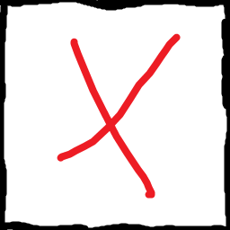
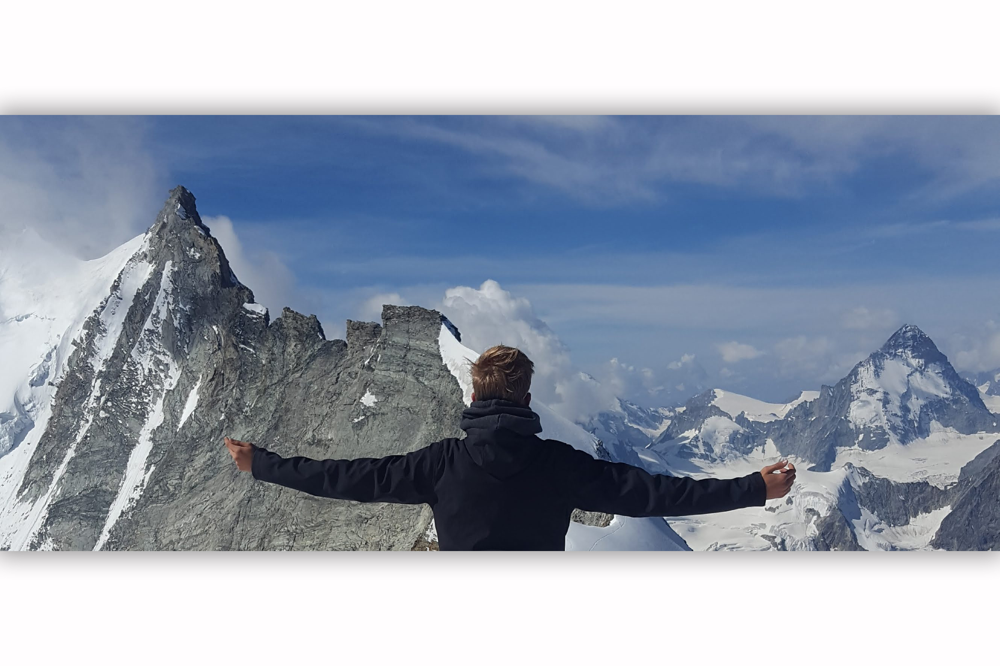
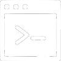
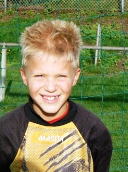

<div class="container">  
    <!-- Start -->
    <div class="start-container" *ngIf="windowManager.showingStart">
        <div class="start-toprow"> 
            
            <span> Jorrit Schepers </span>
        </div>
        <div class="start-midrow">
        </div> 
        <div class="start-bottomrow">
            <div class="start-logoff-container">
                
                <span> Log Off </span>
            </div>
        </div>
    </div>

    <!-- Picture -->
    <div class="picture-container" *ngIf="pictureId != 0" (click)="pictureId = 0">
        
        <div>
            
        </div>
    </div>

    <!-- Tic Tac Toe -->
    <div [style.zIndex]="windowManager.tttZIndex" class="tab-container" id="ttt-container"
         *ngIf="windowManager.showingTicTacToe" (click)="windowManager.moveTabToFront(windowManager.TTT_ID)" cdkDrag>
        <div class="tab-header" id="ttt-header" cdkDragHandle>
            
            <span>Tic Tac Toe</span>
            
        </div>
        <div class="tab-body" id="ttt-body">
            <div class="ttt-end-screen" *ngIf="ttt.playerWon != null" (click)="ttt.resetGame()">
                <span *ngIf="ttt.playerWon == 'cross'" style="color: rgb(0, 200, 0)">You won!</span>
                <span *ngIf="ttt.playerWon == 'circle'" style="color: red">You lost</span>
                <span *ngIf="ttt.playerWon == 'draw'" style="color: grey">Draw!</span>
            </div>
            <div class="ttt-row" *ngFor="let row of ttt.fieldOfPaths; let y = index">
                <div class="ttt-column" *ngFor="let tile of row; let x = index">
                    
                </div>
            </div>
        </div>
    </div>

    <!-- Word -->
    <div [style.zIndex]="windowManager.wordZIndex" class="tab-container" id="word-container" 
         *ngIf="windowManager.showingWord" (click)="windowManager.moveTabToFront(windowManager.WORD_ID)" cdkDrag >
        <div class="tab-header" id="word-header" cdkDragHandle>
            
            <span>Fancy wordpad</span>
            
        </div>
        <div class="tab-body" id="word-body">
            <div class="word-toolbar"></div>
            <div class="word-page">
                <div class="word-page-text">
                    <br>
                    <!-- <p>
                        Hoi, mijn naam is Jorrit Schepers en ik ben tweede jaars ICT student op <a href="https://www.han.nl/">Hogeschool van Arnhem en Nijmegen</a>.
                    </p> -->
                    <textarea>{{inputValue}}</textarea>
                </div>
            </div>
        </div>
    </div>

    <!-- CMD -->
    <div [style.zIndex]="windowManager.cmdZIndex" class="tab-container" id="cmd-container" 
         *ngIf="windowManager.showingCmd" (click)="windowManager.moveTabToFront(windowManager.CMD_ID)" cdkDrag>
        <div class="tab-header" id="cmd-header" cdkDragHandle>
            
            <span>A great interface!</span>
            
        </div>
        <div class="tab-body" id="cmd-body">
            <span>C:\Users\JorritSchepers>_</span><br>
            <br>
            <span>C:\Users\JorritSchepers>dir</span><br>
            <br>
            <span>Directory of C:\Users\JorritSchepers</span><br>
            <br>
            <a routerLink="/about-me" routerLinkActive="active"><span>07/01/2020 23:31 &nbsp; &lt;DIR&gt; &nbsp;&nbsp;&nbsp; about-me</span></a><br>
            <a routerLink="/my-projects" routerLinkActive="active"><span>10/01/2020 19:01 &nbsp; &lt;DIR&gt; &nbsp;&nbsp;&nbsp; my-projects</span></a><br>
            <a routerLink="/contact-me" routerLinkActive="active"><span>15/01/2020 03:54 &nbsp; &lt;DIR&gt; &nbsp;&nbsp;&nbsp; contact-me</span></a><br>
        </div>
    </div>
    
    <!-- Browser -->
    <div [style.zIndex]="windowManager.browserZIndex" class="tab-container" id="browser-container" 
         *ngIf="windowManager.showingBrowser"(click)="windowManager.moveTabToFront(windowManager.BROWSER_ID)" cdkDrag>
        <div class="tab-header" id="browser-header" cdkDragHandle>
            
            <span>The little less dark web</span>
            
        </div>
        <div class="tab-body" id="browser-body">
            <div class="browser-jorrit">
                <span style="color: #4285F4;">J</span>
                <span style="color: #EA4335;">o</span>
                <span style="color: #FBBC06;">r</span>
                <span style="color: #4285F4;">r</span>
                <span style="color: #34A853;">i</span>
                <span style="color: #EA4335;">t</span>
            </div>
            <div class="browser-search-box">
                <form [formGroup]="searchForm" (ngSubmit)="searchWord(searchForm.value)">
                    <input id="word" class="browser-search-input" type="text" formControlName="word" placeholder="Search for anything!" required>
                </form>
            </div>
        </div>
    </div>

    <!-- Desktop Icons -->
    <div class="desktop-icon" (click)="openPicture(1)">
        
        <span>Jorrit.jpg</span>
    </div>

    <div class="desktop-icon" (click)="openPicture(2)">
        
        <span>Jorrit in de bergen.jpg</span>
    </div>

    <div class="desktop-icon" (click)="windowManager.openTab(windowManager.TTT_ID)">
        
        <span>tic-tac-toe.exe</span>
    </div>

    <div class="desktop-icon" (click)="windowManager.openTab(windowManager.CMD_ID)">
        
        <span>cmd.exe</span>
    </div>

    <div class="desktop-icon" (click)="windowManager.openTab(windowManager.WORD_ID)">
        
        <span>fancy word pad.exe</span>
    </div>

    <div class="desktop-icon" (click)="windowManager.openTab(windowManager.BROWSER_ID)" cdkDrag>
        
        <span>Brow-<br>ser.exe</span>
    </div>

    <!-- Taskbar -->
    <div class="taskbar-container">
        <div class="taskbar-windows-logo" (click)="windowManager.showingStart = !windowManager.showingStart">
            
            <span><i><b>start</b></i></span>
        </div>
        <div class="taskbar">
            <div class="taskbar-time"> {{currentTime | date: "short"}} </div>
        </div>
    </div>
</div>